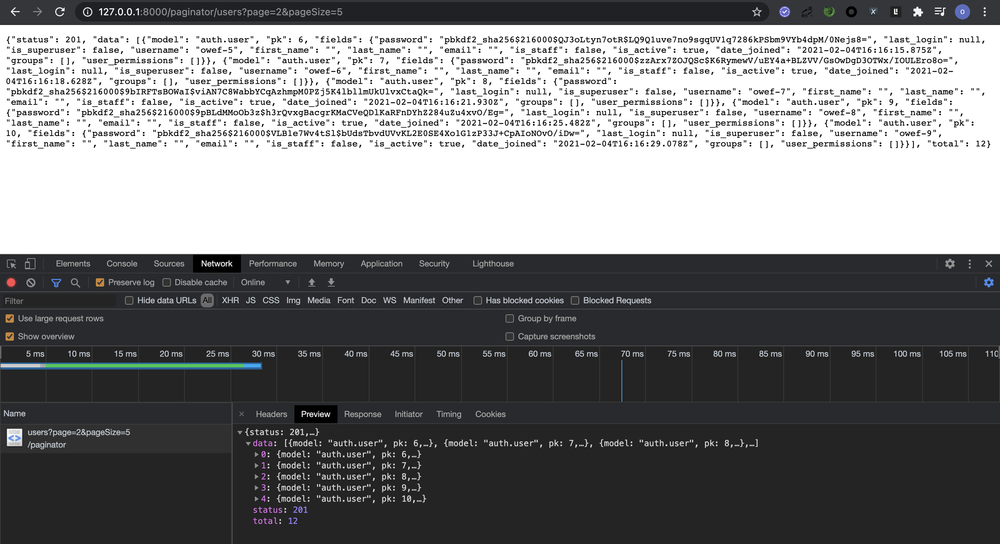

Django提供了Paginator和ListView两个分页实现类，Paginator实现类支持设置每页大小、获取指定页码的数据，对页码的格式和范围做了容错处理，避免实现分页时编写重复的代码；ListView是对Paginator实现类的封装，使用queryset和paginate_by变量调用Paginator实现类，实现列表视图的分页。
Django中的默认分页可满足大部分的场景，但也存在一些不足，本文将分析Django中分页的实现原理、不足及改进方法。
一、Django中Paginator实现类的用法
打开django_sample项目，进入django_sample目录，创建paginator_example应用1
python manage.py startapp "paginator_example"
向应用paginator_example的视图文件views.py中添加视图UserEndPoint1
2
3
4
5
6
7
8
9
10
11
12
13
14
15
16
17
18
19
20
21
22
23
24
25
26
27
28
29import json
from django.contrib.auth.models import User
from django.core.paginator import Paginator
from django.http import JsonResponse
from django.core import serializers
# Create your views here.
from django.views import View
class UserEndPoint(View):
def get(self, request):
queryset = User.objects.all()
page = request.GET.get('page', 1)
page_size = request.GET.get('pageSize', 10)
# 调用默认分页实现 Paginator
paginator = Paginator(queryset, per_page=page_size)
total = paginator.count
# 获取指定页的数据，结果为queryset
data = paginator.get_page(page)
return JsonResponse({
'status': 201,
'data': json.loads(serializers.serialize('json', data)),
'total': total
})
向应用paginator_example中添加路由文件urls.py并配置UserEndPoint视图的路由1
2
3
4
5
6
7from django.urls import path
from paginator_example.views import UserEndPoint
urlpatterns = [
path('users', UserEndPoint.as_view())
]
启动django服务后，访问UserEndPoint视图的地址

二、Django中Paginator实现类的原理及优缺点
1. 分页实现类的实现原理
分页实现类不仅可以对queryset进行分页，凡事具有count方法、len方法的对象都可以使用Paginator进行分页。
针对queryset分页时，会进行两次数据库的查询，分别查询数据的总量和指定分页的数据；分页的具体实现代码如下1
2
3
4
5
6
7
8
9
10
11
12
13
14
15
16
17
18
19
20
21def get_page(self, number):
"""
Return a valid page, even if the page argument isn't a number or isn't
in range.
"""
try:
number = self.validate_number(number)
except PageNotAnInteger:
number = 1
except EmptyPage:
number = self.num_pages
return self.page(number)
def page(self, number):
"""Return a Page object for the given 1-based page number."""
number = self.validate_number(number)
bottom = (number - 1) * self.per_page
top = bottom + self.per_page
if top + self.orphans >= self.count:
top = self.count
return self._get_page(self.object_list[bottom:top], number, self)
调用get_page方法时，首先检查所获取的分页页码格式是否正确，如果number小于1或大于最大页数，number将被设置为最大页码数，如果number不是整型，将被设置为1，然后调用page方法获取数据；如果直接调用page方法，则需要自己处理number数据有效性验证方法validate_number抛出的异常；
page方法中，首先计算出分页查询条件中的数据，当调用self.count属性时，执行数据的总量的查询语句；然后利用分片对queryset进行分片，此时，执行分页查询的sql语句
然后，调用_get_page方法，根据分页后的数据创建Page类的实例化对象，用于后续的操作。
2. Paginator实现类的优点
- 验证页码和
per_page是否为整型，不需要自己做额外的验证和转换 - 兼容处理：如果当前页码非整形，默认展示第一页；如果当前页码超过最大页，默认展示最后一页
- 使用简单，方便
3. 🉑️优化方向
- 增加
per_page最大值的限制 - 从
request对象中获取分页参数，避免外部获取，减少代码冗余
三、Django中Paginator实现类的优化及封装
在应用paginator_example中创建paginator.py文件，编写分页实现类CustomPaginator1
2
3
4
5
6
7
8
9
10
11
12
13
14
15
16
17from django.core.paginator import Paginator
from django_sample.settings import PAGINATOR
class CustomPaginator(Paginator):
def __init__(self, request, object_list, per_page=None, orphans=0, allow_empty_first_page=True):
self.request = request
per_page = request.GET.get(PAGINATOR.get('page_size'))
super().__init__(object_list, per_page, orphans, allow_empty_first_page)
def get_page(self):
page = self.request.GET.get(PAGINATOR.get('page'), 1)
if self.per_page > PAGINATOR.get('max_page_size'):
self.per_page = PAGINATOR.get('max_page_size')
return super().get_page(number=page)
上述实现类增加了直接从request对象中获取per_page和page，减少重复获取页码和每页大小的代码；增加pre_page最大值的验证，避免大量数据查询导致数据库性能下降。
使用上述实现类时，只需要在项目django_sample的settings模块/文件中增加分页配置，如下1
2
3
4
5PAGINATOR = {
'max_page_size': 100,
'page': 'page',
'page_size': 'pageSize'
}
然后，在视图中调用分页类CustomPaginator即可1
2
3
4
5
6
7
8
9
10
11
12
13
14
15
16
17
18
19
20
21import json
from django.contrib.auth.models import User
from django.http import JsonResponse
from django.core import serializers
# Create your views here.
from django.views import View
from paginator_example.paginator import CustomPaginator
class UserV2EndPoint(View):
def get(self, request):
queryset = User.objects.all()
paginator = CustomPaginator(request, queryset)
data = paginator.get_page()
return JsonResponse({
'status': 201,
'data': json.loads(serializers.serialize('json', data)),
})
视图UserV2EndPoint与UserEndPoint相比，代码量减少，而且更加的清晰。
分页的最佳实践
- 分页实现类
Paginator中存在page和per_page的数据类型验证，不需要在视图中进行额外的验证 - 分页实现类
Paginator中未限制每页的最大数量，如果查询的数据量过大，可能导致数据库挂掉，需要在视图中限制每页的最大数量 - 可重写视图
View，增加分页方法，进一步减少视图文件中的代码量，同时也更加方便后续的维护